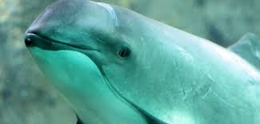
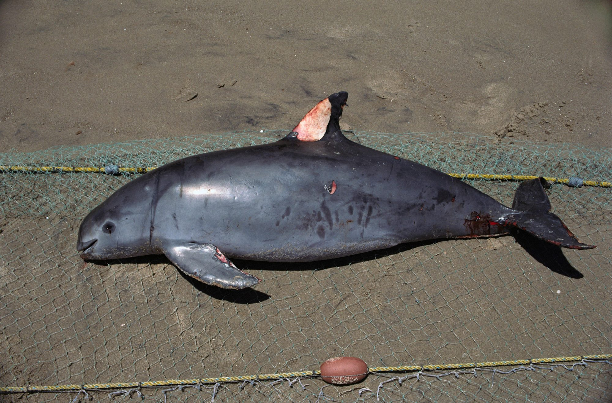

About the Vaquita

The vaquita, also known as Phocoena sinus, is the world's most endangered marine mammal, with current estimates suggesting fewer than ten individuals remain in the wild. This small porpoise is known for its elusive nature and resides solely in the northern part of the Gulf of California, Mexico. The vaquita's decline is primarily due to bycatch in illegal gillnets used for capturing the totoaba fish, whose bladder is highly valued on the black market.
The vaquita is a critical part of the marine ecosystem, and its extinction would signify a tragic loss of biodiversity.
Conservation Efforts

Global and local organizations have launched several initiatives to protect the vaquita, involving a multifaceted approach to conservation. Efforts include the use of advanced surveillance technologies to monitor illegal fishing activities, the implementation of stricter fishing regulations, and the development of vaquita-safe fishing gear to prevent bycatch. Partnerships between governments, NGOs, and local communities play a crucial role in the conservation strategy, emphasizing sustainable practices and the importance of the vaquita to the region's biodiversity.
How You Can Help

Your involvement is crucial to saving the vaquita. You can help by donating to conservation funds that support the enforcement of fishing regulations and the development of vaquita-safe fishing gear. Educating others about the vaquita's plight and advocating for sustainable seafood choices are powerful ways to make a difference. Volunteering for or supporting organizations dedicated to marine conservation can also have a significant impact on the vaquita's survival.
FAQ
- What efforts are being made to save the vaquita?
- Conservation efforts include increased patrolling of their habitat to prevent illegal fishing, the use of alternative fishing nets that do not harm vaquitas, and international cooperation to reduce demand for products resulting in bycatch. Organizations worldwide are working tirelessly to raise awareness and funds for vaquita conservation.
- Why is the vaquita so important to the ecosystem?
- As a top predator, the vaquita plays a crucial role in maintaining the health and balance of the marine ecosystem in the Gulf of California. Their presence indicates a healthy marine environment, which is vital for biodiversity and the survival of numerous marine species.
- Can the vaquita be saved from extinction?
- While the vaquita's situation is critical, conservationists believe there is still hope. Success depends on immediate action to eliminate bycatch, protect their habitat, and ensure strict enforcement of conservation laws. Public awareness and support are also key factors in the fight to save the vaquita.
Donate
If you would like to contribute to the conservation of the vaquita, please consider making a donation. Your support is invaluable in our fight to save this critically endangered species. For donation details, please contact ryandeng666@gmail.com or visit Save the Vaquita
.